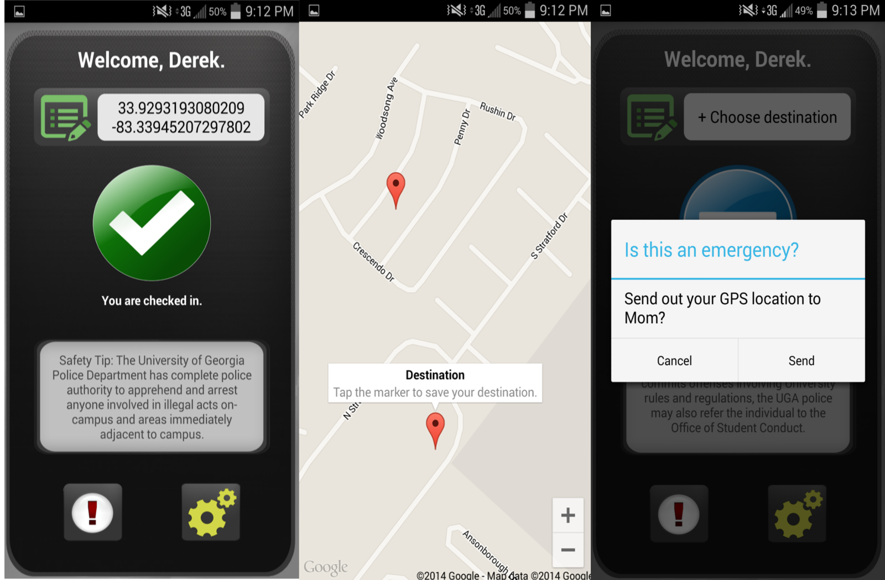

Team UGASafety - Group 5
Derek Buchman, Dylan Sexton, Michael Keeton, Chris Klappich
Semester Overview
Crime around a University's campus and the general safety of its students are the problems we are exploring. The University of Georgia offers some campus safety and security services; such as security cameras, foot patrols, and key card accessible dormitories. However there are still incidents on campus and students’ safety can be increased.
According to UGA, the institution currently addresses safety by offering security services like 24-hour foot and vehicle patrols, lighted pathways/sidewalks, and controlled dormitory access (key, security card, etc). However, there are around 1000+ safety incidents per academic year on average. Our solution will work in tandem with current solutions to increase student awareness, police presence, and a general atmosphere of safety.
Our design solution is a mobile app that allows a student to 'checkin' with family or friends whenever they travel late at
night or anywhere that feels unsafe. It focuses on simplicity, keeping an emergency contact
informed, as well as collecting and storing a minimal amount of user data.
It allows a user to create a unique profile which houses their chosen emergency contact
whom they want to keep informed (likely a parent, guardian, or friend) as well as any information
police or medical personnel may need if they are contacted.
Below are screenshots of our initial prototype for AndroidOS:
After creating a functional prototype, we evaluated the design through usability tests and heuristic evaluations. Through our think-aloud, retrospective, and usability testing we were able to identify several logic errors. We also received a few unexpected, but helpful responses from our participants.
Below is a compiled list of our user’s suggestions/errors/comments along with the participant's usability task times:
- The user is always a ‘he’
- While typing /changing settings, keyboard does not go away easily (or appear)
- The checkin setting is not a global variable (resets after every pg change)
- Let users know that this prototype application actually texts people**
- The checkout w/ safe word still pops up even after user has checked out
- Ambiguous button for destination and check in
- Ambiguous emergency button. The user doesn't know its functionality
- Change the application’s terminology (checkin to en-route?)
- Who is getting the emergency text?? specify
- App crashes on back button (too many processes?)
- Alert dialog crashes if we change the screen
- FIXED* Safe word thread is still running when user changes screens but alertdialog is set to null if the user leaves the main page. (app crashes)
- Use android scroll linear for input fields
- Verify input fields, currently accepts blank
- Require first and last name?
- ”Title is ugly”
- There is no text feedback when emergency mode is pressed
- ”Is this for freshmen only”?
- (We might want to consider increasing the scale of this app by adding a way to make custom destinations.)
- The safe word input field is not autofocused when alert dialog pops up
- Change colors to a darker theme
- “Light blue might be too bright at night time”
- Auto capitalize text input?
- Initial actions for user’s is uncertain. (“What do I do?”)
- There is confusion between destination and current location.
- This app needs more campus buildings options, not just dorms!
Usability Times (seconds)
| Tasks | User1 | User2 | User3 | User4 | User5 |
|---|---|---|---|---|---|
| Create a user profile | 50.75 | 59.55 | 85.24 | 48.39 | 41.64 |
| Checkin/checkout to any destination | 1.20 | 10.31 | 20.81 | 29.87 | 13.38 |
| Checkin, wait, then enter 'safeword' in popup dialog | 21.20 | 37.06 | 32.70 | 33.58 | 33.34 |
| Go to settings and change your 'safeword' | 130.20 | 21.00 | 24.54 | 15.18 | 16.68 |
| Activate the app's 'Emergency Mode' | 5.20 | 17.12 | 17.12 | 14.18 | 10.75 |
Also, as part of the evaluation stage of design, the class analyzed each group's design using Heuristic Evaluations. Below is a compiled list of usabilty problems (and the respective degree of error) as documented by our classmates:
- Confusion of when you choose the destination whether that is where you are or where you are going (4)
- After checking in and trying to edit my profile and pressing back, the check-in is removed (3)
- After sending out emergency text, maybe a short pop-up mentioning that is was successful (2)
- No indication of what I should be entering into the settings field (2)
- Estimated time is not shown when you select a destination (3)
- Having to check-out before setting a new destination is unintuitive (2)
- For the profile: The text fields need labels. I don’t know where to type my name (4) (Visibility)
- The arrow button looks like a back button, I did not expect it to exit the program (3) (Match between system and real world)
- The ! button doesn’t immediately convey emergency send out (1)
- Why can’t I use the text field to enter information (3)
- When editing profile, the fields are not labeled (4)
- When sending GPS location, there is no user feedback (3)
- The middle button doesn’t immediately convey its functionality (1)
- Color scheme not unified (1)
Through the various tests we discovered several logical errors and realized that many aspects of our application can be improved. Overall, the main criticism we received seemed to be that the user does not know what actions to take in order to complete the desired task. The application’s elements 'looked nice', but ultimately failed at conveying its intended functionality.
